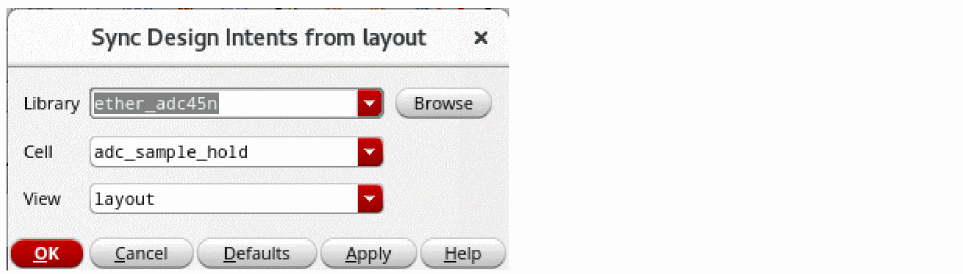
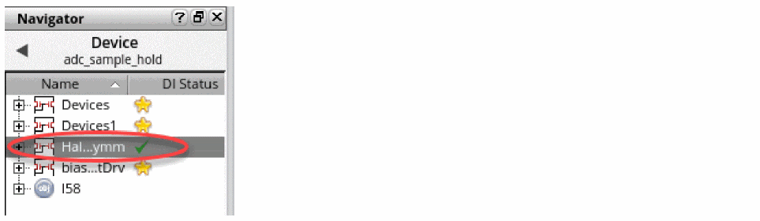

Syncing Design Intents
You can either sync an individual design intent or all design intents to update any design intent changes in the schematic and layout views to ensure that both systems are synced.
Syncing Design Intent When Schematic and Layout are Open
To review and update design intents in a design:
- Ensure that the corresponding view is open in Schematics XL and Layout XL. TheLayout XL can be read-only.
- Review the updates for each design intent or object with a sync notification displayed.
-
Depending on whether you are syncing only a selected design intent, or multiple design intents one at a time,
-
To sync only a selected design intent, in the Navigator or on the canvas, right-click the design intent and choose Design Intent – Sync... – Sync All Selected Design Intent.
The design intent for the selected objects are synced between the schematic and layout cellviews and their sync icons are removed. The Sync button on the toolbar will remain enabled until all the design intents in the design is up to date. -
When syncing multiple design intents simultaneously, right-click the object associated with the design intent in Navigator or in the canvas (in Layout XL, right-click the design intent glyph) and choose Design Intent – Sync... and choose Sync – for the required design intent.
Only the selected design intent is synced between the schematic and layout cellviews. The sync icon is removed indicating that this design intent is now up-to-date.
-
To sync only a selected design intent, in the Navigator or on the canvas, right-click the design intent and choose Design Intent – Sync... – Sync All Selected Design Intent.
- When syncing multiple design intents simultaneously, repeat for any remaining objects with sync notifications displayed in the Navigator.
Design intents implemented using constraints do not generate a sync indication.
Syncing Design Intent When Only Schematic is Open
To synchronize a design intent in a schematic view with the changes in the layout view, when no corresponding layout view is opened, perform the following steps:
- Ensure that the design is open in Schematics XL.
- Review the updates for each design intent or object with a sync notification displayed. For more information, see Alert for Synchronization Required in Schematic.
-
In the Navigator or on the canvas in Schematics XL, right-click and choose Design Intent – Sync... – Sync All Design Intent. Alternatively, select the required DI and click the Sync button on the toolbar.
The Sync Design Intents from Layout form displays. The form is displayed only if the associated layout view for the schematic is not open.
 - Select the library, cell, and view name that contains the DI in the layout for which the selected DI is to be synchronized in Schematic XL.
-
Click OK.
The design intent in the design is synchronized between the schematic and layout cellviews.
Design intents that are present only in the layout cellview are not deleted if their implementation status isreview. The sync icons are removed and the Sync button on the toolbar is disabled, indicating that the design is now up-to-date.
Design intents implemented using constraints do not generate a sync indication.
On syncing a design, the sync notification is removed from recently amended and updated design intents. The updated design intents that require attention are then identifiable by the implementation status icons on the Navigator or by hovering over a design intent to display a tooltip.
Related Topics
Implementation Status of Design Intent
Return to top